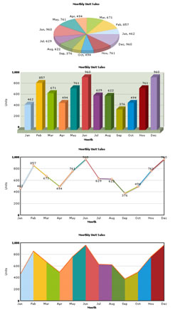

Using Multiple Charts in a Single HTML Page |
Using FusionCharts, you can create any number of charts in a single page - each chart can have its own data source, size or other properties.
Let us see how to embed 4 charts in a single HTML page. |
<html> <div id="chartdiv2" align="center">Second Chart Container Column 3D</div> <div id="chartdiv3" align="center">Third Chart Container Line 2D</div> <div id="chartdiv4" align="center">Fourth Chart Container Area 2D</div> |
As you can see above, we've created 4 DIV elements, one for each chart. Here you must be aware that one DIV element can hold only one chart. Again each DIV element is given a unique ID i.e. no chart DIV element should be of same name (This is the first crucial point to remember). Hence the IDs of the 4 DIV elements are chartdiv1, chartdiv2, chartdiv3 & chartdiv4. …<div id="chartdiv1" align="center">First Chart Container Pie 3D</div>… The second crucial thing to take care of is the definition of variable/object name of each chart. Each chart should be defined in a separate variable. Thus we get four variables/objects, 1 for each chart. … Here we define 4 separate objects myChart1, myChart2, myChart3 & myChart4. Again we must remember that the chart ID that we are assigning must have unique names. Hence we give myChartId1, myChartId2, myChartId3 & myChartId4 respectively for each chart. Next we provide XML data to the charts using dataURL method. You can always use dataXML method if you want to. Again you can always use different data sources for different charts. Now the last important and most crucial step is rendering of the chart. We render each chart using render() method. myChart1.render("chartdiv1"); Again note here that we have used separate and correct chart DIV id name while rendering each chart. myChart1 is rendered in chartdiv1, myChart2 in chartdiv2 and so on. Hence we get 4 separate charts rendered (One must be very cautious here. This is because if the same name chartdiv1 is used in all cases, only one chart, probably the last chart, will be rendered). The page will create four charts in a single page as shown below: |
|  |
In this example, we've used the same data source for all charts. However, in your application, you can always use different data sources for these charts. Also, for each chart you can opt to select dataURL or dataXML method of providing data. |